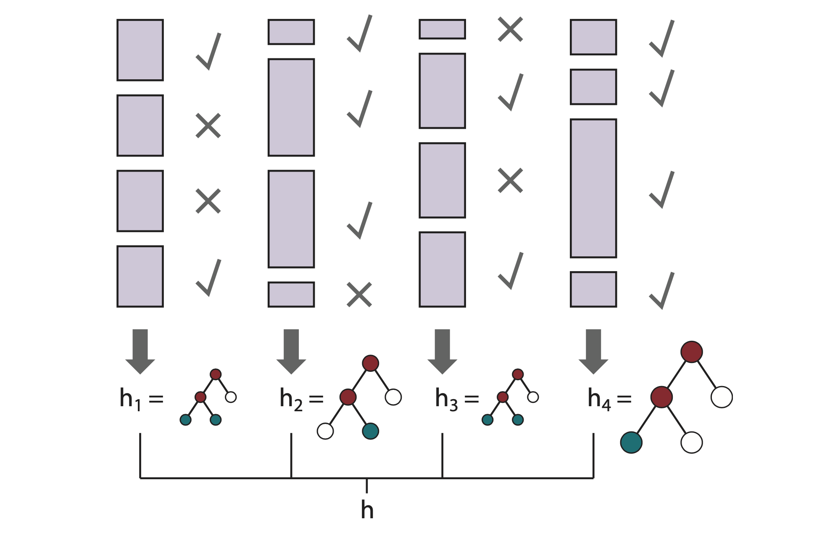
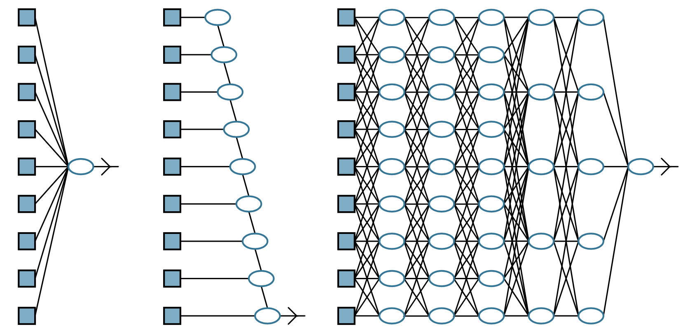
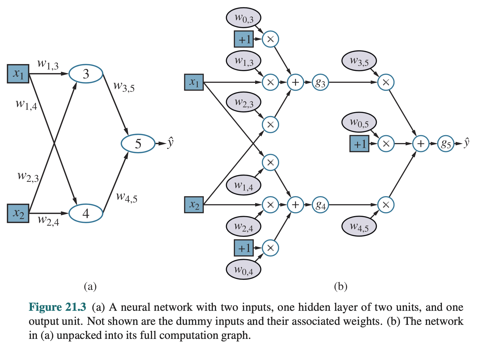
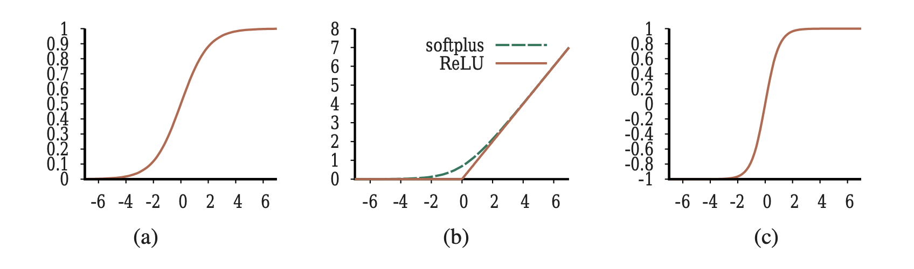

E se eu não tenho dados suficientes para separar três conjuntos grandes?
Divida os dados em k partes iguais (5 ou 10 são típicos).
Treine em k−1 partes; valide na que sobrou.
Repita k vezes, alterando qual parte fica de fora.
Reporte a média dos k resultados de validação.
Quando k = n chamamos de leave-one-out cross-validation (LOOCV).
Regularização
Algumas hipóteses perdem poder de generalização conforme ficam mais complexas.
Uma opção é aplicar técnicas de regularização: uma penalização à complexidade da hipótese.
Em uma árvore de decisão podemos limitar a profundidade máxima da árvore ou o número de nós.
Parâmetros e hiperparâmetros
Parâmetros
Aprendidos a partir dos dados.
São o resultado do treinamento.
Ex.: coeficientes de uma regressão; pesos de uma rede; cortes nos nós de uma árvore.
Hiperparâmetros
Configuram do processo de treinamento.
Escolhidos pelo pesquisador antes do treinamento.
Ex.: profundidade máxima da árvore; k em k-fold; taxa de aprendizado; força da regularização.
Ensemble learning
Em vez de uma hipótese, treinamos várias e combinamos suas previsões (voto majoritário ou média).
Essa combinação reduz viês e variância.
Quatro famílias principais: bagging, random forest, stacking, boosting.
Bagging
Sorteie, com reposição, do conjunto de dados de treinamento, k amostras do mesmo tamanho.
Treine um modelo base em cada amostra.
Para fazer predições: use voto majoritário (classificação) ou média (regressão) das previsões dos k modelos base.
Random forest
Uma extensão do bagging para árvores de decisão.
Um atributo for muito informativo tende a ser a raiz em quase todas as árvores em um ensemble de bagging.
Uma solução é considerar apenas um subconjunto aleatório dos atributos em cada divisão da árvore.
Stacking
Em vez de combinar modelos do mesmo tipo (como em bagging), o stacking combina modelos de tipos diferentes.
Treine vários modelos base nos dados de treino (uma regressão logística, uma árvore, uma SVM).
Use o conjunto de dados de validação para obter as previsões de cada modelo base.
Treine um meta-modelo que aprende a combinar as previsões dos modelos base.
Boosting
Treine o modelo 1 nos dados com pesos iguais para cada observação.
Identifique os exemplos que o modelo 1 errou; aumente o peso deles.
Treine o modelo 2 nessa amostra reponderada; ele é "forçado" a se preocupar com as observações difíceis.
Repita por k rodadas; a predição final é um voto ponderado dos k modelos.
Boosting

Fonte: Russell, S. e Norvig, P. (2021). Artificial Intelligence: A Modern Approach, 4ª ed.
Gradient boosting
Variação do boosting onde, em vez de aumentar o peso das observações erradas, o próximo modelo é treinado com foco no gradiente de erros residuais produzidos por modelos anteriores.
Deep learning
Família de técnicas que usam circuitos algébricos com muitos níveis e cujas conexões têm pesos ajustáveis.
Inspiradas em modelos que buscavam reproduzir o funcionamento de neurônios biológicos; redes neurais artificiais.
Lida muito bem com dados de alta dimensionalidade e padrões complexos de interação entre variáveis.
Deep learning

Fonte: Russell, S. e Norvig, P. (2021). Artificial Intelligence: A Modern Approach, 4ª ed.
Anatomia de um neurônio artificial
Cada unidade (neurônio artificial) faz duas operações:
Soma ponderada das entradas: in = w1x1 + w2x2 + … + b
Função de ativação não linear: saída = g(in)
Os pesos wi e bias b são os parâmetros que o treino vai ajustar.
Rede feedforward

Fonte: Russell, S. e Norvig, P. (2021). Artificial Intelligence: A Modern Approach, 4ª ed.
Funções de ativação
Não linearidades aplicadas dentro de cada unidade.
Permite a aproximação de funções quaisquer com um grau arbitrário de precisão.

Fonte: Russell, S. e Norvig, P. (2021). Artificial Intelligence: A Modern Approach, 4ª ed.
Referências
Russel, S., & Norvig, P. (2021). Artificial intelligence: A Modern approach (4th ed.). Prentice Hall.